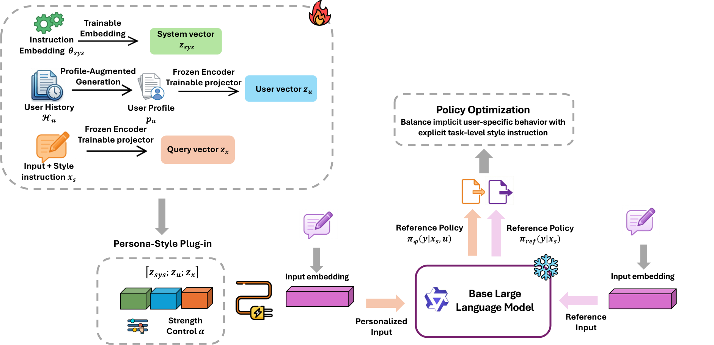

Hi, I’m Jiang Wu
My research focuses primarily on personalized agents, personalized large language models, and personalized recommendation. I am currently developing a benchmark for personalized agents. If you are interested in collaborating on this effort, please feel free to get in touch.
For personalized LLMs, I work on post-training, lightweight adaptation, and preference-guided decoding to help models learn and respond to user preferences. I study how adaptation can capture shared preferences within user groups, and how decoding-time guidance can align generated responses with individual preferences. Because learned preferences can conflict with explicit task and style instructions, I also investigate how to balance these requirements and control the strength of personalization at inference time.
In personalized recommendation, I develop language-model-based approaches to ranking and next-item prediction. These approaches combine item content with users’ interaction histories and feedback to identify items that match individual preferences.
For personalized agents, I explore how memory can retain useful context and experience across interactions to support personalized decisions. This involves deciding what to remember, organizing experience into reusable knowledge, and determining when stored information is relevant to a new task.
I graduated from the University of Southern California in 2020.
Recent Selected Publications
2026Other
- One of my favorite poems is All Watched Over by Machines of Loving Grace by Richard Brautigan. Another favorite is Xin Qiji’s 青玉案·元夕（東風夜放花千樹）.
- I enjoy swimming and playing tennis in different places around the world.
- Places unlocked: Singapore (NTU, NUS), LA, Bay Area, Irvine, Honolulu, Seattle, NYC, Chengdu.
- I’m currently reading The Razor's Edge by W. Somerset Maugham.